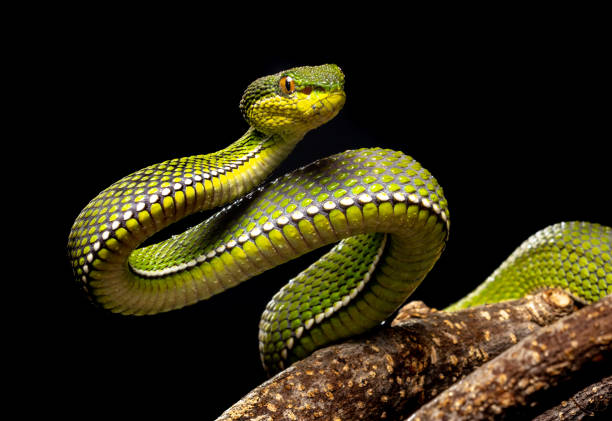
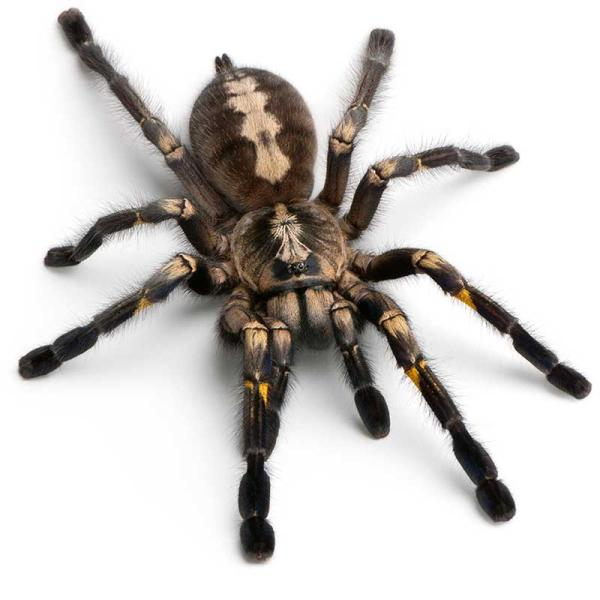
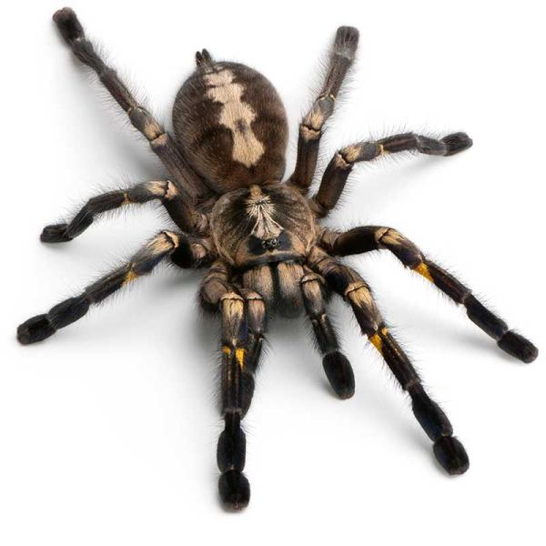

casi siempre voladores, conocidos comúnmente como mariposas;
las más conocidas son las mariposas diurnas,
pero la mayoría de las especies son nocturnas y pasan muy inadvertidas.

Serpiente
Las serpientes u ofidios son un suborden de saurópsidos diápsidos
pertenecientes al orden Squamata, del superorden Lepidosauria,
caracterizado por la ausencia de patas y el cuerpo muy alargado.

Araña
Las arañas son el orden más numeroso de la clase Arachnida,
lejanamente emparentadas con otros grupos de artrópodos,
como los insectos, con los que no deben confundirse.
Tienen glándulas venenosas en los quelíceros, con las que paralizan a sus presas.

lejanamente emparentadas con otros grupos de artrópodos,
como los insectos, con los que no deben confundirse.
Tienen glándulas venenosas en los quelíceros, con las que paralizan a sus presas. 